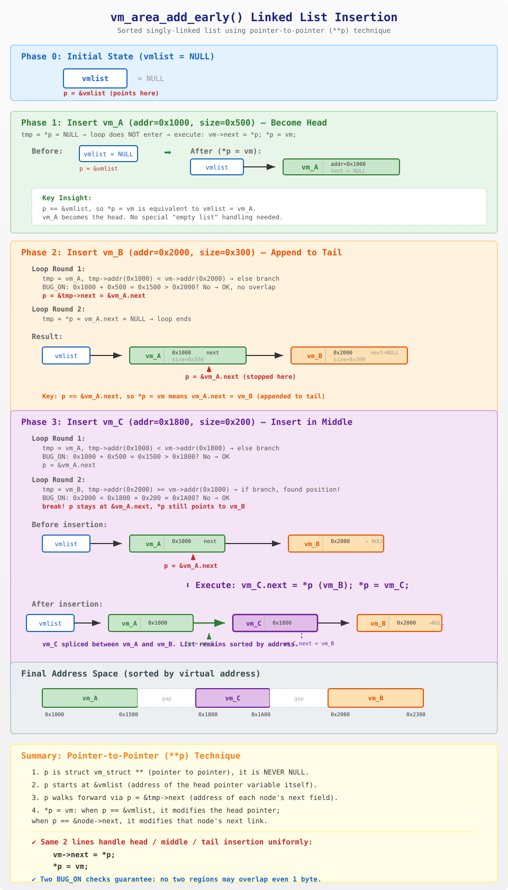

vm_area_add_early() 是 Linux 内核启动早期使用的函数，用于在 vmalloc_init() 初始化之前，将固定的内核虚拟地址区域（如内核镜像的 .text、.rodata、.data 等段）注册到一个临时的有序单链表 vmlist 中。
这样做的目的是：告诉后续的 vmalloc 分配器，这些地址已经被占用了，不要再分配出去。
paging_init()
└── declare_kernel_vmas()
└── declare_vma() × 5 (5个内核段)
└── vm_area_add_early()// include/linux/vmalloc.h
struct vm_struct {
struct vm_struct *next; // 链表指针（侵入式链表的关键）
void *addr; // 虚拟地址起始
unsigned long size; // 区域大小
unsigned long flags; // 标志位
struct page **pages;
unsigned int nr_pages;
phys_addr_t phys_addr;
const void *caller;
unsigned long requested_size;
};关键点：struct vm_struct 的第一个成员就是 next 指针。这意味着每个节点自身就包含了链表连接信息——这就是 Linux 内核中经典的侵入式链表（intrusive linked list）设计。
// mm/vmalloc.c
static struct vm_struct *vmlist __initdata;vmlist 是一个裸指针，充当链表的头指针：
struct vm_struct * 指针NULL（BSS 段自动清零），表示空链表__initdata 标记表示它只在启动阶段使用，启动完成后会被释放// mm/vmalloc.c
void __init vm_area_add_early(struct vm_struct *vm)
{
struct vm_struct *tmp, **p;
BUG_ON(vmap_initialized);
for (p = &vmlist; (tmp = *p) != NULL; p = &tmp->next) {
if (tmp->addr >= vm->addr) {
BUG_ON(tmp->addr < vm->addr + vm->size);
break;
} else
BUG_ON(tmp->addr + tmp->size > vm->addr);
}
vm->next = *p;
*p = vm;
}| 行 | 代码 | 说明 |
|---|---|---|
| 1 | struct vm_struct tmp, *p; |
tmp 是当前遍历到的节点；p 是二级指针，指向"存放节点指针的那个变量" |
| 2 | BUG_ON(vmap_initialized); |
断言：此函数只能在 vmalloc_init() 之前调用 |
| 3 | p = &vmlist; |
p 初始指向链表头指针变量自身的地址 |
| 4 | (tmp = *p) != NULL |
取出 p 指向的指针值赋给 tmp，如果为 NULL 则停止 |
| 5 | p = &tmp->next |
迭代步进：p 移动到当前节点的 next 字段的地址 |
| 6 | tmp->addr >= vm->addr |
找到第一个地址 >= 新节点的已有节点 |
| 7 | BUG_ON(tmp->addr < vm->addr + vm->size) |
重叠检测：新节点尾部不能超过已有节点头部 |
| 8 | BUG_ON(tmp->addr + tmp->size > vm->addr) |
重叠检测：已有节点尾部不能超过新节点头部 |
| 9 | vm->next = *p; |
新节点的 next 指向原来 p 位置上的节点（可能是 NULL） |
| 10 | *p = vm; |
将新节点写入 p 指向的位置——完成插入 |
这是本函数最精妙的设计。p 是 struct vm_struct *，始终指向某个"存放 struct vm_struct 的内存位置"：
情况1: p = &vmlist
p 指向 vmlist 变量本身
*p = vm 等价于 vmlist = vm （修改链表头）
情况2: p = &tmp->next
p 指向某个节点的 next 字段
*p = vm 等价于 tmp->next = vm （在中间/尾部插入）好处：不需要 if (vmlist == NULL) 这样的特殊分支，头部、中间、尾部插入都用相同的两行代码完成。
以 3 个节点为例，故意不按地址顺序插入来展示排序插入能力：
vm_A: addr=0x1000, size=0x500
vm_B: addr=0x2000, size=0x300
vm_C: addr=0x1800, size=0x200 (地址在A和B之间，但第三个插入)初始状态：vmlist = NULL
执行步骤:
p = &vmlist // p 指向 vmlist 变量(地址假设 0xF000)
tmp = *p = NULL // 取出 vmlist 的值
tmp != NULL? → false // 循环条件不满足，不进入循环体
// 注意: p = &tmp->next 根本不执行!
vm->next = *p; // vm_A.next = NULL
*p = vm; // vmlist = &vm_A (等价于 *(&vmlist) = &vm_A)结果：
vmlist ──> [vm_A: addr=0x1000, next=NULL]*p = vm 此时 p == &vmlist，所以直接修改了头指针，vm_A 自动成为 head。
当前状态：vmlist -> vm_A -> NULL
执行步骤:
p = &vmlist // p 指向 vmlist
tmp = *p = &vm_A // tmp 指向 vm_A
tmp != NULL? → true // 进入循环
[循环第1轮]
tmp->addr(0x1000) >= vm->addr(0x2000)? → false (else分支)
BUG_ON: 0x1000+0x500=0x1500 > 0x2000? → No, OK
p = &tmp->next // p 移到 vm_A 的 next 字段的地址
[循环第2轮]
tmp = *p = vm_A.next = NULL
tmp != NULL? → false // 循环结束
vm->next = *p; // vm_B.next = NULL (链表尾)
*p = vm; // vm_A.next = &vm_B (追加到A后面)结果：
vmlist ──> [vm_A: 0x1000] ──> [vm_B: 0x2000] ──> NULL*p = vm 此时 p == &vm_A.next，所以修改的是 vm_A 的 next 指针。
当前状态：vmlist -> vm_A -> vm_B -> NULL
执行步骤:
p = &vmlist // p 指向 vmlist
tmp = *p = &vm_A // tmp 指向 vm_A
tmp != NULL? → true // 进入循环
[循环第1轮]
tmp->addr(0x1000) >= vm->addr(0x1800)? → false (else分支)
BUG_ON: 0x1000+0x500=0x1500 > 0x1800? → No, OK
p = &tmp->next // p 移到 vm_A 的 next 字段
[循环第2轮]
tmp = *p = &vm_B // vm_A.next 指向 vm_B
tmp != NULL? → true
tmp->addr(0x2000) >= vm->addr(0x1800)? → true! (if分支)
BUG_ON: 0x2000 < 0x1800+0x200=0x1A00? → No, OK
break! // 找到插入位置，跳出循环
// 此时: p = &vm_A.next, *p = &vm_B
vm->next = *p; // vm_C.next = &vm_B (C的next指向B)
*p = vm; // vm_A.next = &vm_C (A的next改为指向C)结果：
vmlist ──> [vm_A: 0x1000] ──> [vm_C: 0x1800] ──> [vm_B: 0x2000] ──> NULLvm_C 被完美地插入到 A 和 B 之间，链表保持地址有序。

两个 BUG_ON 确保任何两个区域不存在地址重叠：
情况1: 新节点在已有节点前面
BUG_ON(tmp->addr < vm->addr + vm->size)
vm: [=========]
tmp: [=========] ← tmp->addr 落在 vm 范围内? → BUG!
^
tmp->addr < vm->addr + vm->size → 重叠!
情况2: 新节点在已有节点后面
BUG_ON(tmp->addr + tmp->size > vm->addr)
tmp: [=========]
vm: [=========] ← vm->addr 落在 tmp 范围内? → BUG!
^
tmp->addr + tmp->size > vm->addr → 重叠!如果检测到重叠，内核会直接 BUG()——触发 panic，因为这属于严重的内核配置错误。
┌─────────────────────────┐ ┌─────────────────────────────┐
│ 启动早期 (Boot) │ │ 启动后期 (vmalloc_init) │
│ │ │ │
│ declare_kernel_vmas() │ │ 遍历 vmlist │
│ │ │ │ │ │
│ ├─ vm_area_add_early │ │ ├─ 每个节点 → vmap_area │
│ ├─ vm_area_add_early │ ────→ │ ├─ 插入红黑树 (busy) │
│ ├─ vm_area_add_early │ │ └─ 识别空闲区间 (free) │
│ ├─ vm_area_add_early │ │ │
│ └─ vm_area_add_early │ │ vmap_initialized = true │
│ │ │ │
│ 数据结构: vmlist 单链表 │ │ 数据结构: 红黑树 + free list│
│ 标记: __initdata (临时) │ │ 标记: 永久 │
└─────────────────────────┘ └─────────────────────────────┘
vmalloc_init() 中的关键代码:
for (tmp = vmlist; tmp; tmp = tmp->next) {
va = kmem_cache_zalloc(vmap_area_cachep, GFP_NOWAIT);
va->va_start = (unsigned long)tmp->addr;
va->va_end = va->va_start + tmp->size;
va->vm = tmp;
insert_vmap_area(va, &vn->busy.root, &vn->busy.head);
}
此后 vmalloc() 只从 free tree 中分配地址，自动绕开已注册的内核段。
vmlist 本身（__initdata）在启动完成后被释放。| 特性 | 说明 |
|---|---|
| 设计模式 | 侵入式单链表 + 二级指针有序插入 |
| 链表头 | vmlist——一个裸指针，不是结构体 |
| 排序方式 | 按虚拟地址从低到高排列 |
| 安全检查 | 两个 BUG_ON 保证无地址重叠 |
| 使用阶段 | 仅在 vmalloc_init() 之前（__init） |
| 后续处理 | vmalloc_init() 将链表导入红黑树后，链表被废弃 |
| 二级指针优势 | 头/中/尾插入统一两行代码，无需特判空链表 |
vm->next = *p; // 新节点接管 p 位置原来指向的后续节点
*p = vm; // p 位置改为指向新节点无论 p 指向 &vmlist 还是 &某节点->next，这两行代码的语义完全一致：在 p 这个位置把新节点"嫁接"进去。这就是 Linus Torvalds 所推崇的"理解指针的指针"的经典范例。